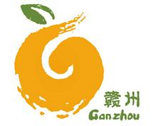
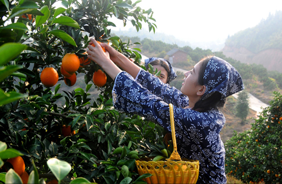

| 首页| 红色故都| 江南宋城| 生态明珠| 客家摇篮| 世界橙乡 |
1500多年前，柑橘就特别钟情于赣南这块肥沃的土地，南北朝刘敬业在《异苑》中记载：“南康有奚石山，有 柑橘、橙、柚。”南康就是今天赣州一带。至北宋年间，柑、橘、橙、柚等果树已经蔚然成林。在清朝年间，是下方官员进贡给朝廷的水果之一，深得雍正帝喜食。三十多年前，中国科学院南方山区综合考察队在赣南实地考察一年后得出这样的结论：“赣南发展柑橘气候得天独厚，应成为我国柑橘商品生产重要基地。”时任中共中央总书记的的胡耀邦专门为发展赣南柑橘产业作出批示。为此，赣州从华中农业大学引种纽贺尔等8个脐橙品种试种成功，由此拉开了赣南脐橙产业发展波澜壮阔的历史进程。
一是赣南由于其得天独厚的红壤条件，生产的脐橙果大形正，橙红鲜艳，光洁美观，可食率达74%，肉质脆嫩、化渣，风味浓甜芳香，含果汁55%以上，可溶液性固形物含量14%以上，最高可达16%，含糖10.5%-12%，含酸0.8-0.9%，固酸比15-17:1。与美国脐橙相比，可溶性固形物含量高1-2个百分点，与日本脐橙相比可溶性固形物含量高1-3个百分点.由于品质优良,风味浓郁,富有香气,深受欢迎，无形之中消费者把赣南产的脐橙称为之为赣南脐橙。
二是由于广大农民种植脐橙获得了较好的经济效益，找到了一条脱贫致富奔小康的好路子。此外，境外客商看好赣南脐橙，进一步带动了产业，为了便于销售，进入大市场，参与国际国内市场竞争，自觉地将本地脐橙起名为“赣南脐橙”。
中国脐橙看赣南，赣南脐橙看信丰。大多数中国人知道，中国最好的脐橙在赣南！而真正的赣南人知道，赣南最好的脐橙在信丰。赣南脐橙名扬天下，而信丰脐橙更是信丰脐橙中的精品！
信丰县位于江西省赣州市赣州市东南部，距县城29公里，交通便利，南下特区、北上省会。独特的地理环境、富含享誉中外的“赣南稀土”的土壤、温和适中的气候、积淀四十余年的技术实力，使信丰脐橙色泽鲜艳，果长无核、味美甜脆、汁浓化渣、风味长久,多次荣获国优、部优产品称号，1976年经外贸部批准，安西脐橙首次出口香港试销，得到消费者高度赞誉，八十年代赢得了美国、俄罗斯、香港、澳门等专家的青睐。1995年江西省技术监督局颁布的《信丰脐橙》等八个地方标准的全部量化及特征依据来自于安西脐橙，被国家技术监督局指定为全国唯一脐橙标准示范区，并被国家命名为“中国脐橙之乡”。数十年来，信丰脐橙在国内外脐橙评比中斩获大奖无数，参评的样品均取自安西的脐橙。赣南脐橙名扬天下，而信丰脐橙更是信丰脐橙中的精品。全县经过40余年的发展，驯化、培育出了纽贺尔、朋娜、奈佛里娜、佛罗斯特等优良品系。
进入新世纪以来，信丰人民在县政府的统筹领导之下，进一步掀起发展脐橙事业的高潮，在确保“绿色”和保证品质的同时，种植面积和产销量也有了突飞猛进的发展。现全镇拥有脐橙种植面积8万多亩，年总产量1200万公斤，在历届的赣州市政府举办的“中国脐橙节”评比中，信丰脐橙也多次荣获“脐橙王”的称号！